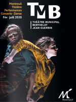

Des outils utiles, dis-tu, des outils qui servent à. Me dire ce qu'est l'utile et, distillent ta fable de l'utilité et confinent ce que tu nommes l'inutile et mutilent, tranquille, les « inutiles » On n'en a rien à battre du mot utile mais le mot nécéssaire nous appartient c'est pas une histoire de mot seulement ce qui est nécessaire pour moi ne t'intéresse pas. J'ai besoin que le.la boulangè.r.e me dise la pâte pétrie et pas seulement combien coûte sa baguette. J'ai besoin que les élu.e.s me partagent leur quotidien et je souhaiterais qu'iels apprennent le scrupule du mien. Ose savoir. J'ai besoin de rencontrer lae marchand.e, lae vendeu.re.se, lae dealeu.re.se, lae médecin, lae prostitué.e, l'infirmièr.e, lae mécanicien.ne, lae voyant.e, lae bouchèr.e, lae rappeu.r.se, l'enseignant.e, lae chomeu.r.se, ailleurs que dans les lieux dédiés. Ailleurs que dans la queue des centres des finances publiques. J'ai eu mon conseiller au téléphone, il m'a eu l'air sympa, j'ai besoin de me réapproprier le temps de la convivialité en dehors de mon cercle professionnel, familial et amical. J'ai besoin d'être en froid avec le capitalisme, qu'on se quitte comme un vieux couple et que ça se finisse mal, qu'on ne soit plus une famille, parce qu'il y en a marre que tu me serves noël comme une carotte. Déchargeons la douceur de son carcan mercantile pour se réapproprier sa puissance. Reprenons le temps de ce qui ne s'oblige pas, A l'écoute, je dis, en quête de lieu. Enquête de ce qui nous déroute, et de ce qui compte pour nous, A l'écoute, je dis, des enquêtes qui servent à. Me dire ce qui fait lieu dans les bivouacs du réel. Soucieu.x.ses de maladresses attenti.f.v.es à l'improbable.
Nous sommes un collectif amateur (fan) de couture, écriture, cuisine, performance, réalité augmentée, danse, scultpure, peinture, cinéma... Le théâtre municipal de Montreuil Berthelot Jean Guerrin nous a accueilli en résidence entre octobre 2019 et mars 2020. Durant cette période nous avons proposé une programmation hybride entre arts visuels et arts vivants dans le hall du théâtre où nous avons également tenu la buvette, ce qui nous a permis d'expérimenter un modèle d'autogestion et d'autofinancement. Aujourd'hui, nous sommes basé.e.s à Marseille. Nous enquêtons sur les pratiques de différents lieux de la ville, où création et convivialité se côtoient (ou se côtoyaient avant les confinements). Café de quartier, bar associatif, théâtre, cinéma, coopératives, associations de loi 1901, centres d'art, lieux hybrides ..... . Le programme
Après-midi de discussions et de mise en regards de trois textes traversés par des problématiques liées à nos économies d’artistes.
Comment nous dire et trouver notre place en tant que femmes artistes ?
Comment raconter nos corps travaillant, luttant, dansant ?
Comment nous émanciper des places qui nous sont assignées ?
TRUST ME, Juliette Beau
Dans le cas d'un nouveau report de la réouverture des salles de spectacles, nous vous tiendrons informé.e.s et vous communiquerons les liens des enregistrements de la rencontre. >>> Evénement Facebook
Le Transmutateur vous invite sur le plateau du Théâtre Berthelot - Jean Guerin à Montreuil pour vous présenter deux spectacles (reportés suite au 1er confinement) : LES VOLANTS, de Pierre Klein et Antoine Vallé "Nous avons tenté d'imaginer un spectacle où l’air ambiant occuperait l’un des rôles principaux. Une substance fluide, invisible et sans dimension accompagne des surfaces inframinces et des corps solides soumis à la loi de la gravité. Ensemble, ils déclenchent des phénomènes, proposent des souffles, des courants et des états de suspensions." CLAUDE, FILM POLICIER, de Théo Hillion, Zoé Pautet et Zoé Philibert (Cie La Verbe) est une enquête qui dérive à partir de l'imaginaire du polar, un genre plein de suspense, de fausses pistes et de trenchs. >>> Evénement Facebook
Dans le cas d'un nouveau report de la réouverture des salles de spectacles, nous vous tiendrons informé.e.s et vous communiquerons les liens des vidéos d' enregistrement des spectacles.
Théâtre Municipal Marcelin Berthelot • Jean Guerrin
télécharger le programme du théâtre

Le Transmutateur - association loi 1901
6, rue Sainte-Marie
13005 Marseille
Contact : transmutateur[آت]gmail.com